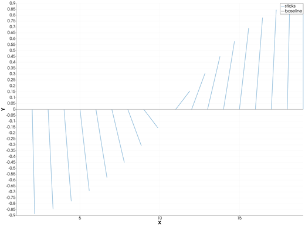
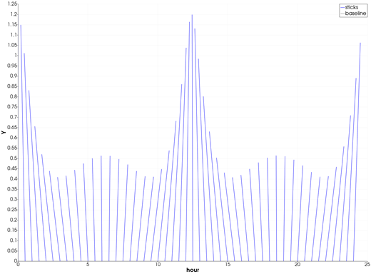
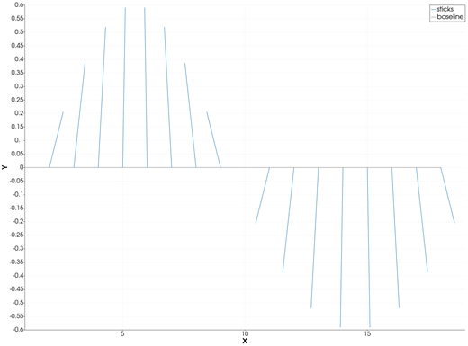

feather — Feather Plot
A feather plot draws a vector at each point along the X axis, starting on the y = 0 baseline: the classic picture of a current, a wind or a geomagnetic vector time series. From Julia it is feather, GMT.jl's own name; the feather icon on the X,Y Plot tool's gallery row draws one from the curves of the current page.
Syntax
p = feather(t, [u v])
p = feather([t u v])
p = feather(t, [θ r]; rtheta=true)
p = feather(D) # a GMTdataset with those columns
p = feather(t, [u v]; key=value, ...)Description
feather(t, [u v])draws, at eacht[i], a stick from(t[i], 0)in the direction of the vector(u[i], v[i]).feather([t u v])takes the same three columns as one matrix. A four-column matrix[t y u v], GMT.jl's form, is accepted when everyyis 0.- With
rtheta=truethe last two columns are an angleθ, in degrees counter-clockwise from the +X direction (GMT.jl's convention), and a lengthr. - The sticks are scaled together, so their lengths compare: by default the longest one spans about 5 % of the X range.
scalesets the factor yourself. - A grey baseline is drawn at
y = 0under the sticks.
feather returns the X,Y Plot window's handle and, like plot, draws on a new page of the open window.
The feather icon
Clicking feather on the gallery row takes the page's first two curves as u and v, with X from the first one, and draws their feather plot on a new page. The page needs two curves.
Running the Examples
Paste each example into the iGMT window's Julia console, or into the Julia REPL after using InteractiveGMT. Each one is complete on its own.
Examples
Create Feather Plot
Vectors of the same length turning from pointing down to pointing up.
θ = -90:10:90
u = 2 .* cosd.(θ)
v = 2 .* sind.(θ)
p = feather(1:length(θ), [u v])
Give the Vectors as Angle and Length
The same sticks from their angles and lengths, with rtheta=true.
θ = -90:10:90
p = feather(1:length(θ), [θ fill(2, length(θ))]; rtheta=true)
A Current Over Two Tidal Cycles
Hours on X; the current turns with the tide and its speed changes.
t = 0:0.5:24
dir = 90 .+ 60 .* sin.(2π .* t ./ 12.42) # degrees counter-clockwise from east
speed = 1 .+ 0.4 .* cos.(2π .* t ./ 12.42)
p = feather(t, [dir speed]; rtheta=true, lc=:blue, title="Current", xlabel="hour")
Set the Stick Scale
scale multiplies the vectors: an X-axis length per unit of vector length.
θ = 0:20:340
p = feather(1:length(θ), [cosd.(θ) sind.(θ)]; scale=0.6)
From Two Curves on a Page
Draw u and v as two curves, then click feather on the gallery row.
t = 0:0.25:10
p = plot(t, cos.(t); legend="u")
plot!(p, t, sin.(t ./ 2); legend="v")Input Arguments
t — positions along X, a vector.
[u v] — the vectors, a two-column matrix with one row per position: X and Y components.
[θ r] — the vectors as angle and length (with rtheta=true): degrees counter-clockwise from +X, and length.
D — dataset, a GMTdataset with the same 3 (or 4) columns.
Keywords
| Keyword | Values | Default |
|---|---|---|
rtheta | true: the last two columns are angle (degrees) and length | false |
scale | X-axis length per unit of vector length, or :auto | :auto (longest ≈ 5 % of the X range) |
lc, lw, ls, pen | the sticks' line | |
legend, title, xlabel, ylabel | as in plot | "sticks", "Stick diagram" |
The sticks are drawn without arrowheads.
See Also
plot — 2-D Line Plot · compassplot — Arrows from the Origin · X,Y Plot Tool